Franklin y los capitanes, al mando
El fundador Franklin Jiménez Santana lidera la dirección del club, respaldado por los capitanes Luis Núñez, Esteban Morales y Arian Burguillo.
Crónicas de cada jornada, los MVPs, comunicados del cuerpo técnico y anuncios del club.

El fundador Franklin Jiménez Santana lidera la dirección del club, respaldado por los capitanes Luis Núñez, Esteban Morales y Arian Burguillo.
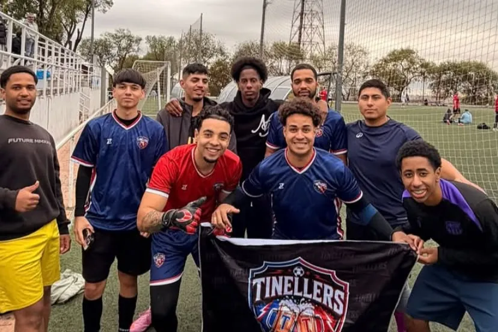
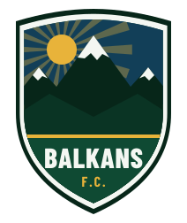
2–3Debut soñado a domicilio. Goles de Alfa Umaro, Luis Núñez y Oscar Piero Malasquez.
Gran actuación de Oscar Piero, que se lleva el MVP del encuentro.
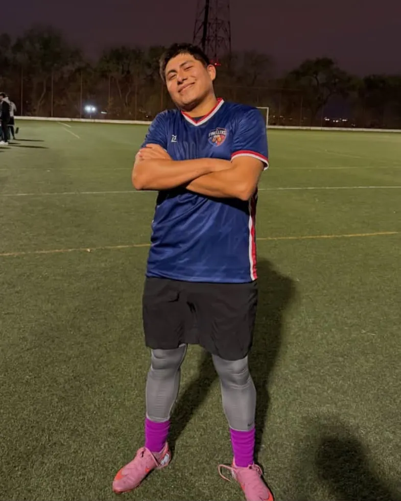
El primer MVP de la historia del club es para Oscar Piero Malasquez. Marcó uno de los tres goles del 2–3 ante Balkans FC y fue el jugador más determinante del debut.
Una semana después volvió a ver puerta en la goleada a La Banda del Patio. Lleva dos goles en dos partidos.
Cifras de la temporada tras la jornada 2.
Tras su ausencia sin aviso previo estando convocado, la dirección deportiva y el cuerpo técnico han decidido sancionar a Fidel Escalante (#25).
No disputó la jornada 2 y su regreso se producirá arrancando desde el banquillo en la jornada 3.
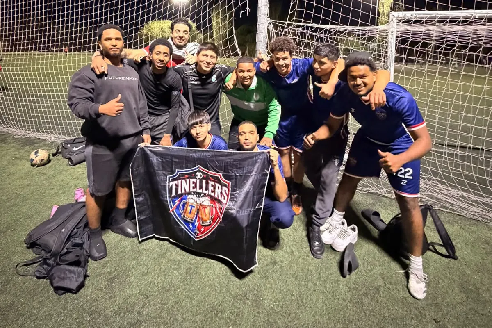
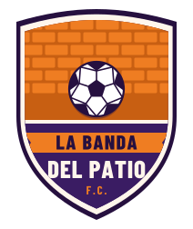
Exhibición coral del equipo. Goles de Alfa Umaro (2), Alejandro Cuevas (2), Oscar Piero (1) y Junior De Jesus (1).
Espectacular actuación bajo palos de Arian Burguillo, que se lleva un merecidísimo MVP.
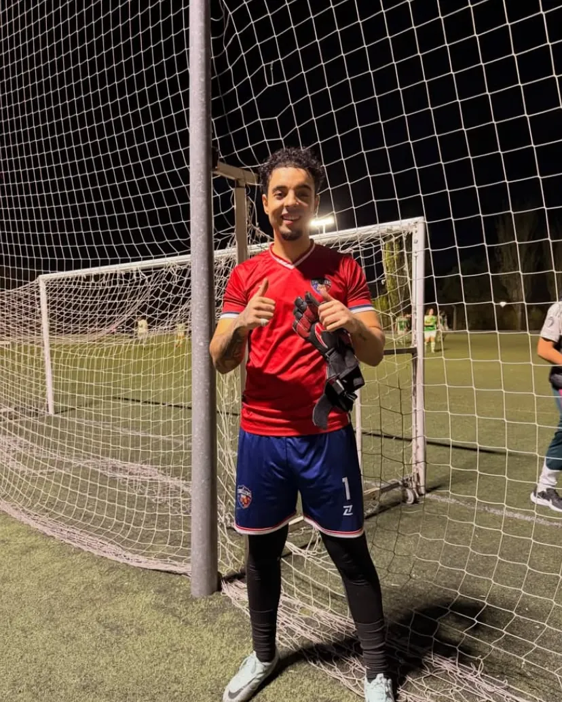
El portero y capitán Arian Burguillo es el MVP de la jornada 2. Mientras el ataque firmaba seis goles, él cerró la portería con una actuación espectacular bajo palos.
Suma 12 paradas en dos partidos, la mejor cifra del equipo, y ya tiene su primer premio de la temporada.
Cifras de la temporada tras la jornada 2.
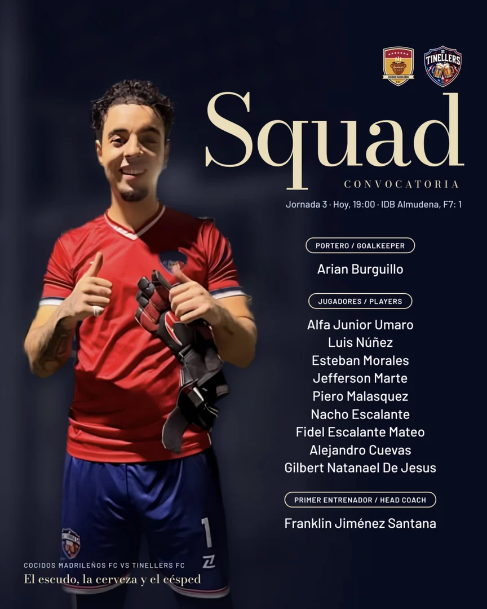
Cocidos Madrileños FC – Tinellers FC, a las 19:00 en el IDB Almudena (campo F7-1). Estos son los convocados:
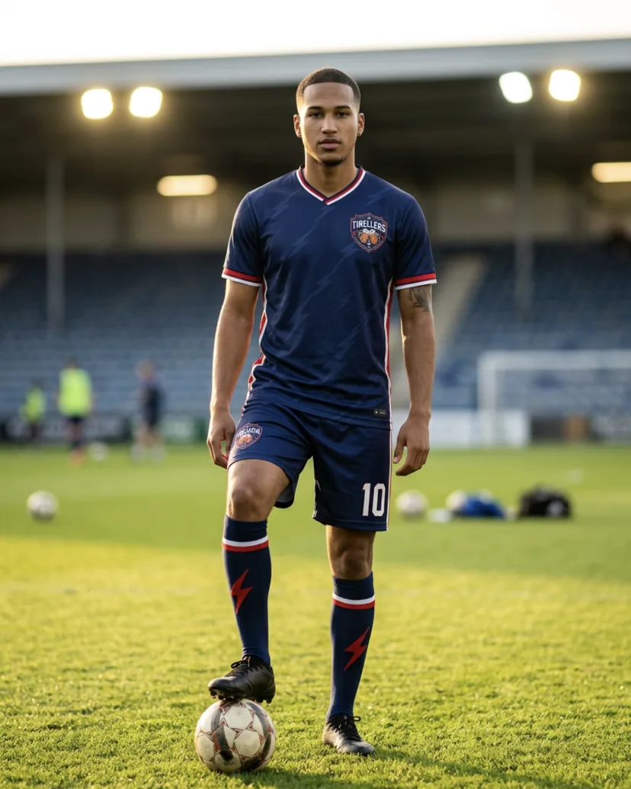
Gilbert Natanael De Jesus se suma a la plantilla con el dorsal 99. Entró por primera vez en la convocatoria para la jornada 3, ante Cocidos Madrileños, aunque esta vez no llegó a jugar.
Puede jugar de central o por banda. Ya tiene su ficha de jugador.
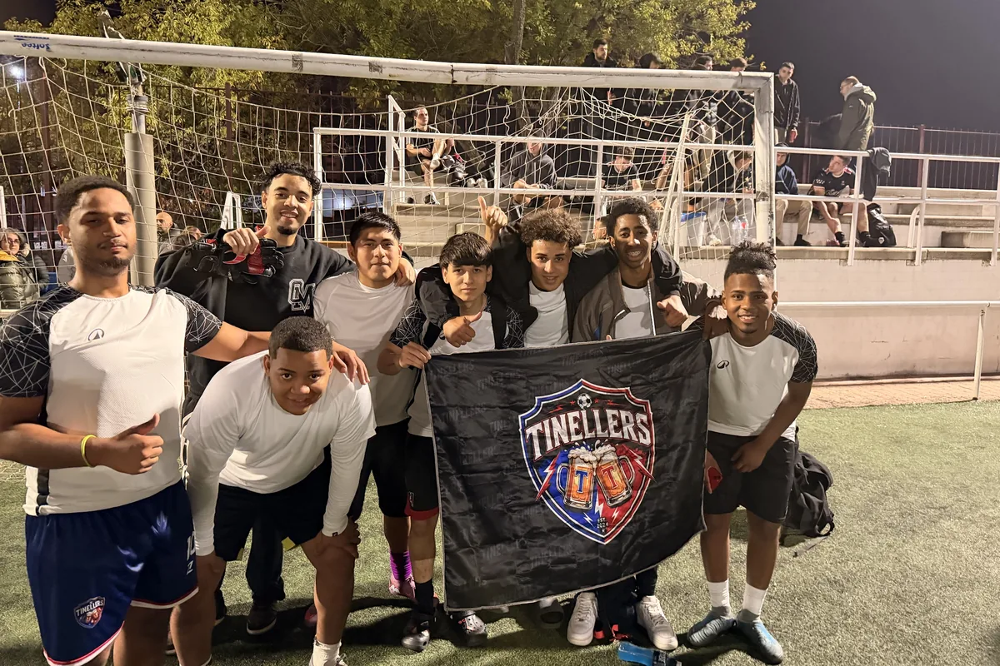
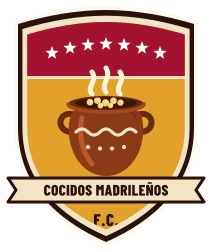
0–6Tres de tres, y la victoria más contundente hasta ahora. Alejandro Cuevas firmó un triplete, Alfa Umaro sumó otro gol y Cocidos Madrileños se marcó dos en propia puerta.
Oscar Piero Malasquez y Luis Núñez dieron una asistencia cada uno. Atrás, Arian Burguillo dejó la portería a cero con 8 paradas.
Con 9 puntos, Tinellers FC es segundo empatado con el líder, La Trese FC, que solo le supera por diferencia de goles (+15 frente a +11). Los dos se ven las caras en la jornada 4, el domingo 15 de noviembre.
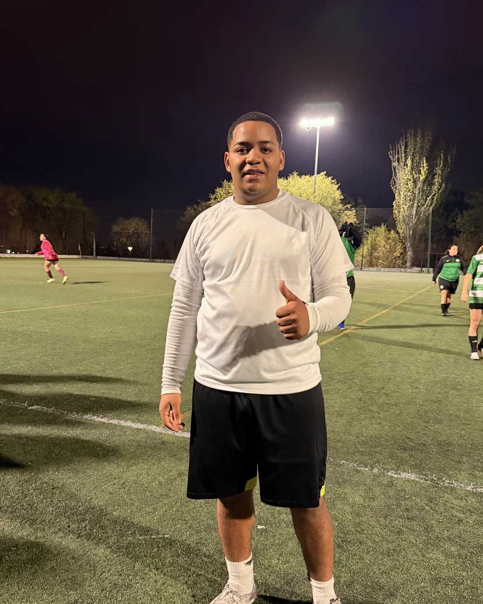
Alejandro Cuevas es el MVP de la jornada 3. Marcó tres de los seis goles ante Cocidos Madrileños y además disparó dos veces más entre los tres palos.
Ya había marcado dos en la goleada a La Banda del Patio: cinco goles en dos partidos, el máximo goleador del equipo.
Cifras de la temporada tras la jornada 3.
Se acabó la racha. Tinellers FC llegaba con tres victorias en tres partidos y cayó 1–4 en el IDB Almudena ante La Trese FC, el líder, en el duelo por lo más alto de la tabla.
Fue la primera derrota de la temporada. Hoy no fue nuestro día: se cae, se aprende y se vuelve más fuerte.
De vuelta a la victoria una semana después de caer ante La Trese. Tinellers FC ganó 2–6 en casa de El Club de Carl con seis goles a domicilio.
El capitán Luis Núñez firmó un triplete y dio una asistencia. Alfa Umaro marcó dos y Alejandro Cuevas cerró la cuenta.
Con 12 puntos, Tinellers FC sigue segundo, a tres del líder La Trese FC. El próximo partido es en casa ante Les Fifiwis, el domingo 29 de noviembre a las 19:00.
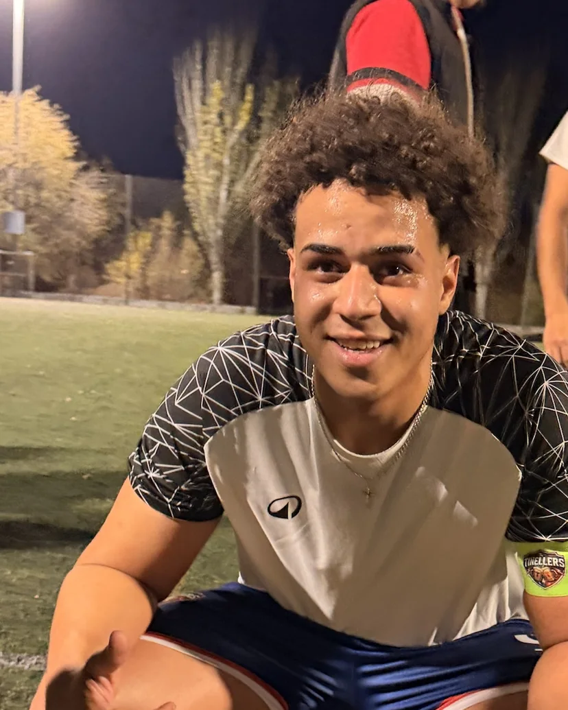
Luis Núñez es el MVP de la jornada 5. El capitán marcó tres goles y dio una asistencia en el 2–6 ante El Club de Carl: participó en cuatro de los seis goles.
Fue la mejor nota del partido, un 9,70. Ya tiene su ficha de jugador con foto.
Cifras del partido de la jornada 5.
Fantasy Tinellers: ficha a cinco jugadores, elige capitán y suma puntos cada jornada. Gratis y sin dinero.